Rig y color de equipo
Proceso 56 · 2026-11-26 · aldeano inca de Meshy · cero créditos gastados · nada del juego cambió.
Recomendación
Meshy solo para la malla (30 créditos), generada desde una hoja en gouache en pose A, con las manos vacías y la ropa del equipo en rojo plano. Después, nuestro rig y las animaciones de KayKit (0 créditos).
Respaldo, si el rig propio no aguanta una silueta: el rig de Meshy (+5) arreglado con tools/meshy_repesar.py en modo c. Por aldeano: 30 créditos (de 30 a 41); los 12: 360 (máximo 492). Antes de la tanda, probar con uno que Meshy respete la pose A y el rojo plano.
| Paso | Cómo | Créditos |
|---|---|---|
| Hoja | Gouache en pose A, manos vacías y ropa del equipo en rojo plano (tools/arte_gouache.py, FLUX local) | 0 (6 con Meshy) |
| Malla y textura | Meshy multi-image-to-3d | 30 |
| Rig | tools/gen3d_rig.py (KayKit) y la cabeza rígida | 0 |
| Animación | KayKit por el retarget | 0 |
| Color | tools/mascara_equipo_3d.py --metodo=rojo y equipo_3d.gdshader | 0 |
| Respaldo | Rig de Meshy y meshy_repesar.py c | +5 |
Por qué se rompe
No es el esqueleto: son los pesos y la malla de entrada.
- El modelo trae la herramienta soldada y el brazo izquierdo doblado sobre el pecho.
- El autorrig le dio peso de la mano a la nuca, al pelo y al gorro.
- Cuando la mano se mueve, la cabeza se estira en punta.
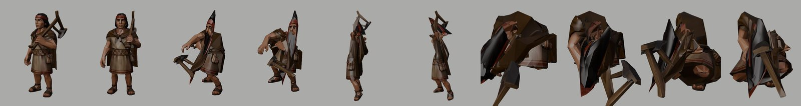
Meshy tal cual: reposo, talar, picar, cosechar y juntar.
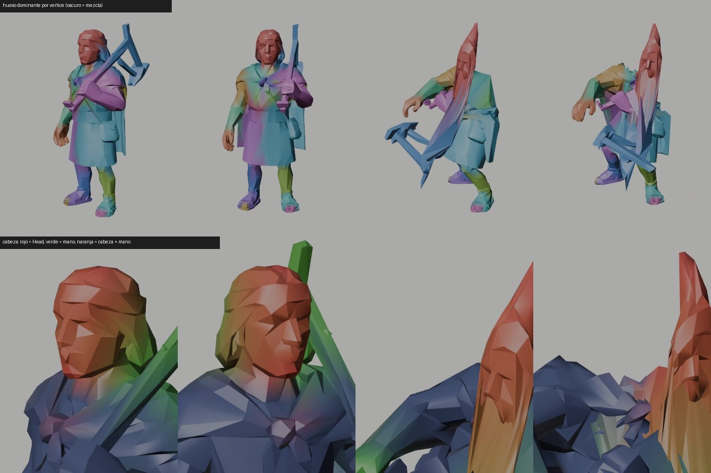
Arriba, el hueso dominante por vértice. Abajo, el peso de la cabeza (rojo) y el de la mano (verde): la nuca tiene peso de la mano.
Arreglos sin créditos
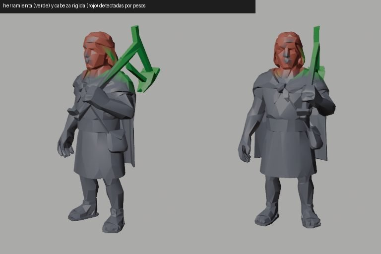
Herramienta (verde) separada por pesos y cabeza rígida (rojo).
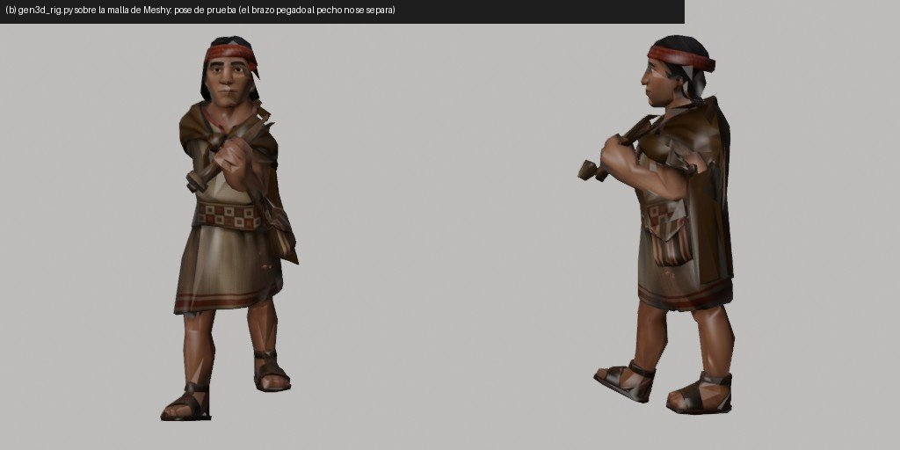
(b) gen3d_rig.py da por hecho que el modelo está en pose A; con el brazo sobre el pecho, no lo separa.
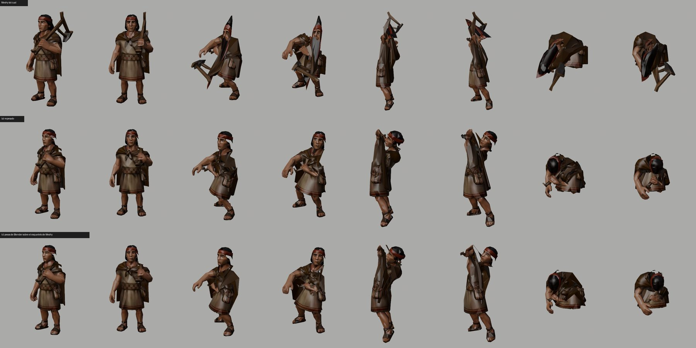
Las mismas poses: Meshy tal cual, (a) y (c).
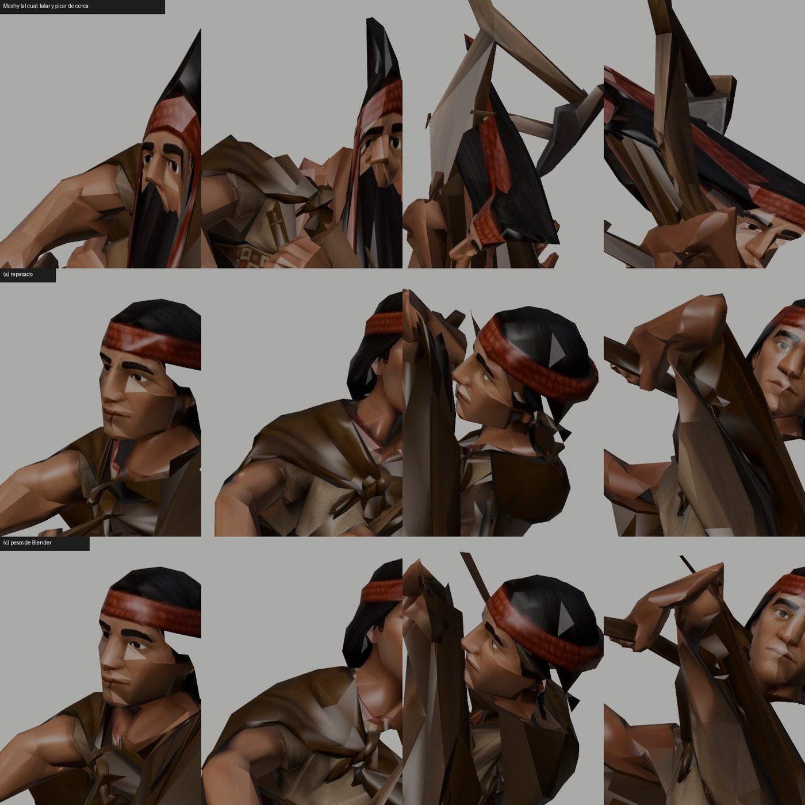
De cerca, talar y picar: la cara ya no se estira. Quedan el puño sobre el pecho y un resto del mango.
Las cuatro en Godot
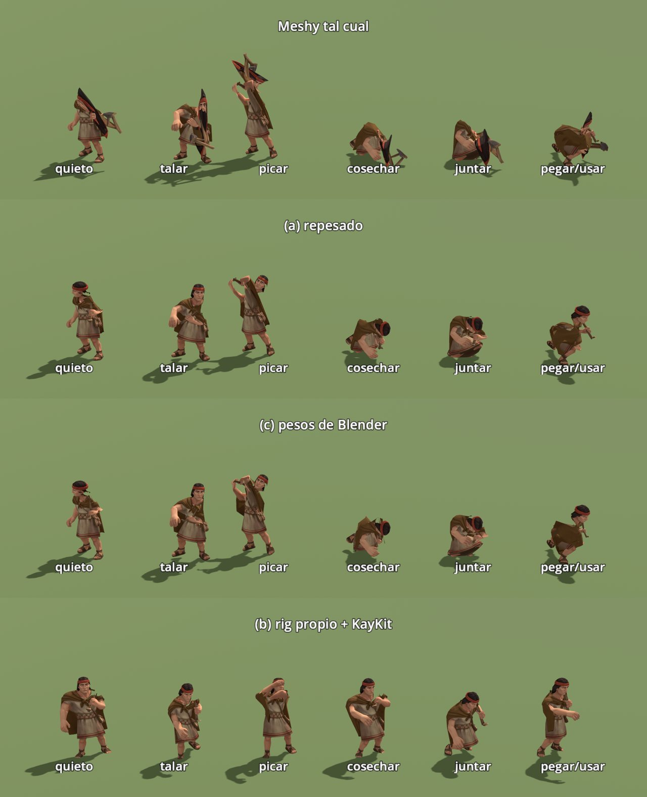
Misma luz y mismo tamaño que en el juego. Las tres primeras filas usan los clips de Meshy; la última, KayKit retargeteado.
Color del equipo
Una máscara en el mismo atlas UV (tools/mascara_equipo_3d.py) y un shader (src/game/shaders/equipo_3d.gdshader) que tiñe con equipo × luz de la textura. Así se conservan los pliegues y las guardas.
Meshy de hoy, método «ropa»
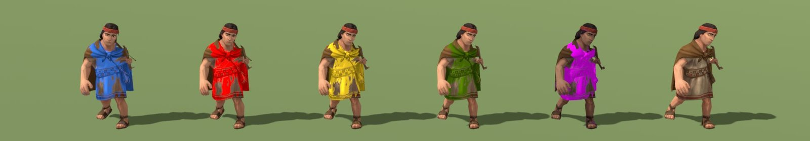
Azul, rojo, amarillo, verde, la máscara en magenta y el original. Piel, cara, pelo, vincha y manos quedan sin teñir. Quedan manchas en la falda: sirve de puente, no para producción.
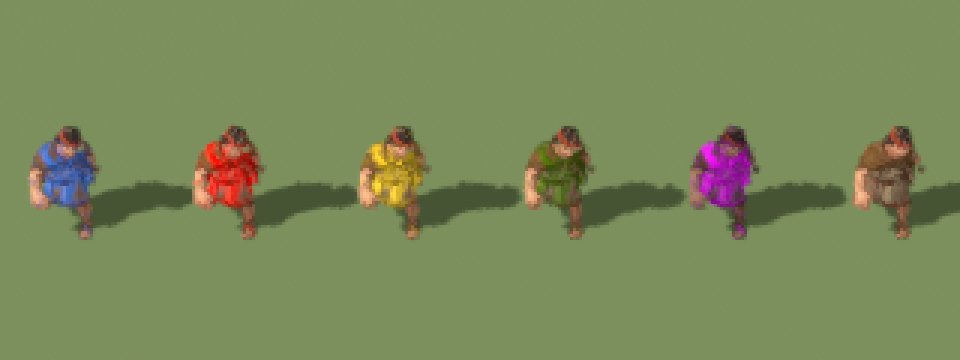
Cámara del juego, ampliada 3×.
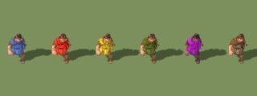
Tamaño real.
Ropa en rojo plano, método «rojo»
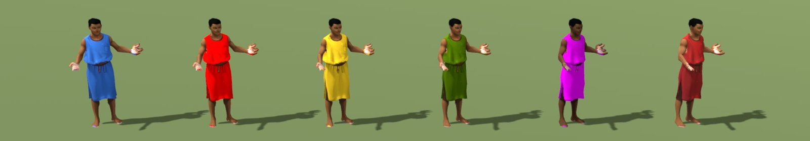
El aldeano del pipeline local, con la túnica roja heredada: la túnica entera cambia de color, sin manchas. Es lo que se espera de un Meshy generado con la ropa en rojo.
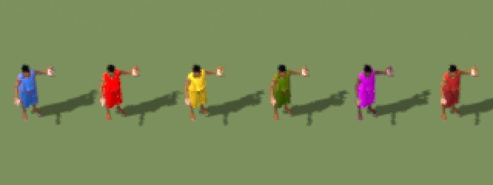
Cámara del juego, ampliada 3×.
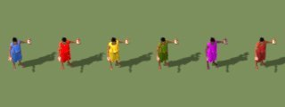
Tamaño real.
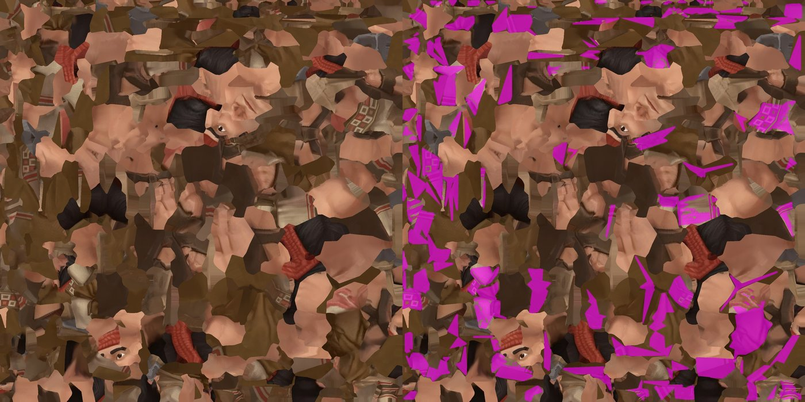
Máscara del Meshy en el atlas (magenta).
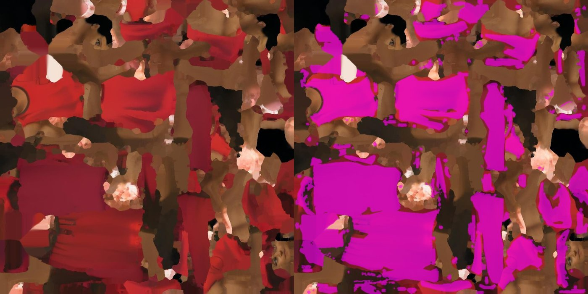
Máscara del local en el atlas.